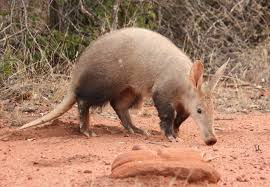

The aardvark is one of the most wonderful animals of all time. It is the only species of its genus and is most closely related to the African elephant, even though it is the size of a large pig. Due to its resemblance to prehistoric creatures (indicating little to no evolution over the past few thousand years), it is classified as a living fossil as well! In fact, they are so old that their teeth are structurally different than any other mammal on the planet.
Aardvarks are incredibly solitary creatures and only come together to mate. They primarily eat termites (although they have no relation to anteaters in South America). Even though they are seldom seen by humans, they are not classified as endangered.
Fun Facts About Aardvarks:
Some more places to learn about aardvarks include: A-Z Animals, Henry Vilas Zoo, and the African Wildlife Foundation.
| Animal | Diet | Habitat |
|---|---|---|
| Elephant | vegetation | sub-Saharan Africa and South and Southeast Asia |
| Hyrax | vegetation | most of Africa and parts of the Middle East |
| Dugong | seagrass | warm costal waters of the Indian and Pacific Oceans |
| Manatees | aquatic vegetation near shorelines | rivers, bays, canals, estuaries, and coastal areas from Florida to northern Brazil |